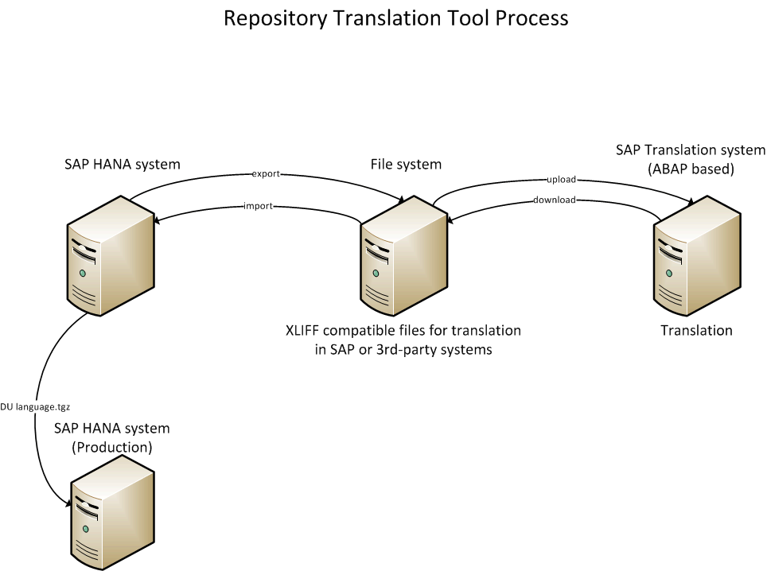

The Repository Translation Tool (RTT) is a Java-based command line tool shipped with the SAP HANA client that enables you to transport language files in a standard format between the SAP HANA repository and a file system or between the SAP HANA repository and a dedicated SAP translation system.
During the translation process, the inactive (design-time) content of tables in the SAP HANA repository must be uploaded to the translation system using the repository translation tool (RTT). After translation is completed, you use the repository translation tool to re-import the translated texts into the SAP HANA repository.
Use the following RTT commands to implement the translation process:
| Command | Abbreviation | Definition |
|---|---|---|
| download (SAP Internal Only) | d | Downloads the translated texts from the SAP translation system to a file system. |
| export | Exports the texts in the original language (written by the developer) from the SAP HANA repository text tables to a file system. | |
| export/upload (SAP Internal Only) | e | Exports and uploads the texts in the original language (written by the developer) from the SAP HANA repository text tables to a file system. |
| import | Imports the translated texts from a file system to the SAP HANA repository text tables. | |
| download/import (SAP Internal Only) | i | Downloads and imports the translated texts from a file system to the SAP HANA repository text tables. |
| upload (SAP Internal Only) | u | Uploads the texts from the file system to the SAP translation system where the translators can translate the texts from the original language into the required target languages. |
If you are using the SAP translation system, you can combine operations in one command, as follows:
(SAP Internal Only): Exports the texts in the original language and uploads the texts to the SAP translation system.
(SAP Internal Only): Downloads the translated texts from the SAP translation system and imports the translated texts to the SAP HANA repository text tables.
